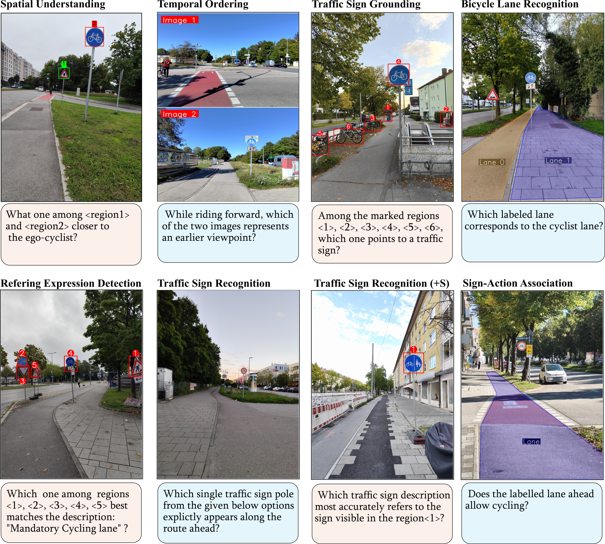
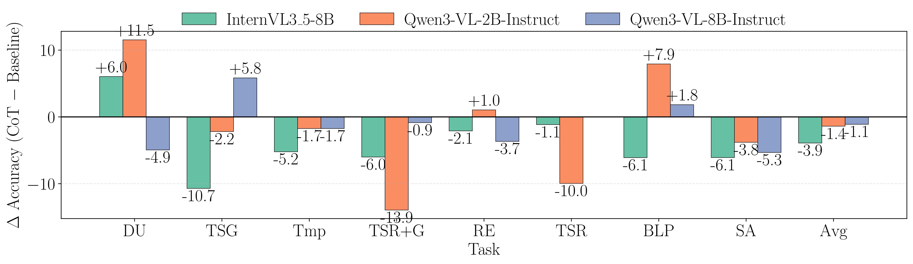
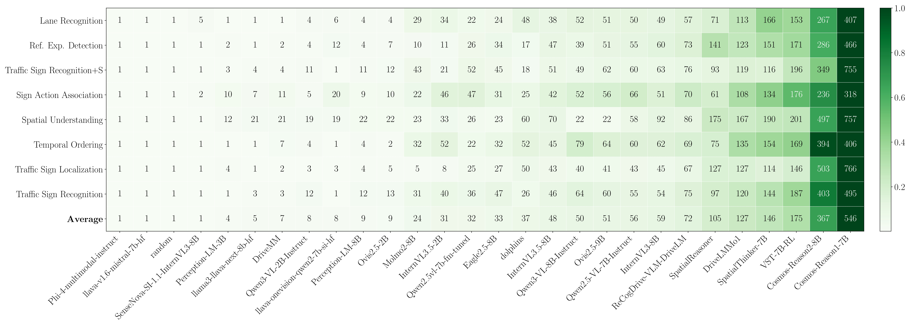

From Steering to Pedalling
Do Autonomous Driving VLMs Generalize to Cyclist-Assistive Spatial Perception and Planning?
CyclingVQA is a cyclist-centric benchmark of 2,053 multiple-choice visual question–answer pairs built from 705 real-world cyclist egocentric images. It spans eight tasks probing spatial perception, traffic-rule compliance, and navigation-relevant reasoning — and reveals how far today's autonomous-driving VLMs are from generalizing to the cyclist's point of view.
- Authors
- Krishna Kanth Nakka Vedasri Nakka
- Affiliation
- Munich, Bavaria, Germany

Benchmark preview · 8 tasksFour things this benchmark adds.
A cyclist-first dataset, eight specialized tasks, a broad VLM evaluation, and a systematic failure taxonomy.
Cyclist-Centric Dataset
2,053 multiple-choice VQA pairs derived from 705 real-world cyclist egocentric images — bridging the gap in ego-perspective urban cycling data.
Specialized Spatial Tasks
Eight evaluation tasks probing cyclist-centric spatial perception, traffic-rule compliance, and navigation-relevant reasoning in complex urban environments.
Benchmarking VLMs
A comprehensive evaluation of general-purpose, spatially enhanced, and autonomous-driving VLMs, revealing significant room for cyclist-specific reasoning.
Systematic Failure Analysis
A granular breakdown of recurring model error types, providing a technical roadmap for future cyclist-assistive intelligent systems.
Eight tasks, one cyclist's view.
Every question is paired with a real egocentric frame, optionally augmented with lane annotations and bounding-box supervision.
Generalists still lead.
Accuracy (%) across eight tasks for proprietary, generalist, spatial-aware, and driving-centric VLMs.
| Model | Size | Type | Release | SU | TSG | TO | TSR+S | RED | TSR | LR | SAA | Avg | Rank |
|---|---|---|---|---|---|---|---|---|---|---|---|---|---|
| Random | – | – | – | 49.5 | 16.3 | 51.3 | 12.9 | 42.4 | 13.4 | 36.0 | 51.7 | 34.2 | 31 |
| Proprietary VLMs | |||||||||||||
| Gemini-2.5-Flash | N/A | Reason | 07/2025 | 77.5 | 98.1 | 56.5 | 82.2 | 93.7 | 83.5 | 72.6 | 86.3 | 81.3 | 1 |
| GPT-5.1 | N/A | Reason | 11/2025 | 63.7 | 89.8 | 59.1 | 82.8 | 93.2 | 85.4 | 60.4 | 83.7 | 77.3 | 2 |
| Generalist VLMs | |||||||||||||
| Qwen3-VL (8B) | 8B | Instruct | 11/2025 | 75.8 | 89.3 | 53.0 | 78.5 | 94.8 | 80.8 | 58.5 | 81.7 | 76.6 | 3 |
| Ovis2.5-9B | 9B | Instruct | 08/2025 | 70.9 | 97.3 | 53.0 | 81.5 | 93.2 | 72.0 | 63.4 | 79.5 | 76.4 | 4 |
| InternVL3.5-8B | 8B | Instruct | 08/2025 | 57.7 | 88.6 | 54.8 | 63.5 | 86.9 | 62.8 | 62.2 | 78.7 | 69.4 | 6 |
| Qwen3-VL (2B) | 2B | Instruct | 11/2025 | 51.1 | 97.3 | 53.9 | 74.0 | 83.8 | 73.9 | 37.2 | 76.0 | 68.4 | 8 |
| Ovis2.5-2B | 2B | Instruct | 08/2025 | 72.5 | 96.4 | 51.3 | 63.1 | 84.3 | 59.0 | 45.1 | 79.1 | 68.8 | 7 |
| Eagle2.5-8B | 8B | Instruct | 04/2025 | 53.8 | 87.8 | 53.0 | 50.4 | 81.7 | 39.8 | 52.4 | 82.1 | 62.7 | 12 |
| Phi-4 | 8B | Instruct | 02/2025 | 44.5 | 73.7 | 51.3 | 59.2 | 75.9 | 59.8 | 51.2 | 73.8 | 61.2 | 14 |
| InternVL3 | 8B | Instruct | 04/2025 | 51.1 | 87.8 | 49.6 | 49.6 | 81.7 | 48.3 | 41.5 | 73.4 | 60.4 | 15 |
| InternVL3.5-2B | 2B | Instruct | 08/2025 | 62.6 | 77.4 | 53.9 | 47.4 | 74.3 | 48.7 | 43.3 | 66.9 | 59.3 | 17 |
| Qwen2.5-VL | 7B | Instruct | 02/2024 | 52.7 | 81.3 | 53.0 | 44.0 | 70.2 | 42.9 | 47.6 | 75.7 | 58.4 | 18 |
| FoundationMotion | 7B | Instruct | 12/2025 | 49.5 | 82.5 | 53.0 | 43.3 | 68.6 | 39.5 | 59.1 | 68.8 | 58.0 | 19 |
| Molmo2-8B | 8B | Instruct | 12/2025 | 56.6 | 88.1 | 53.0 | 34.1 | 73.3 | 37.2 | 49.4 | 43.7 | 54.4 | 22 |
| LLaVA-OneVision | 7B | Instruct | 06/2024 | 54.4 | 65.5 | 50.4 | 37.6 | 65.4 | 34.1 | 37.2 | 71.1 | 52.0 | 24 |
| LLaVA-Next | 8B | Instruct | 04/2024 | 44.5 | 36.0 | 53.0 | 25.1 | 53.9 | 37.5 | 27.4 | 33.8 | 38.9 | 28 |
| LLaVA-1.6 | 7B | Instruct | 12/2023 | 47.8 | 23.1 | 53.0 | 26.2 | 47.6 | 32.6 | 15.2 | 62.7 | 38.5 | 29 |
| Spatial-Aware VLMs | |||||||||||||
| PerceptionLM (8B) | 8B | Instruct | 04/2025 | 79.1 | 95.1 | 50.4 | 68.5 | 85.3 | 78.5 | 67.1 | 58.2 | 72.8 | 5 |
| SpatialThinker | 7B | Reason | 11/2025 | 58.8 | 94.9 | 52.2 | 57.5 | 86.9 | 47.9 | 43.3 | 71.9 | 64.2 | 11 |
| SenseNova | 8B | Instruct | 10/2025 | 78.0 | 70.6 | 53.0 | 48.3 | 82.2 | 49.8 | 50.0 | 68.8 | 62.6 | 13 |
| PerceptionLM (3B) | 3B | Instruct | 04/2025 | 56.0 | 87.6 | 53.0 | 49.8 | 85.9 | 66.3 | 43.3 | 35.0 | 59.6 | 16 |
| VST | 7B | Reason | 11/2025 | 78.6 | 72.3 | 53.0 | 32.4 | 57.1 | 30.7 | 51.2 | 73.0 | 56.0 | 21 |
| SpatialReasoner | 7B | Reason | 04/2025 | 37.4 | 55.0 | 45.2 | 33.7 | 54.5 | 31.0 | 56.1 | 54.8 | 45.9 | 27 |
| Driving-Centric VLMs | |||||||||||||
| Cosmos-Reason2 | 8B | Reason | 12/2025 | 52.2 | 79.3 | 54.8 | 73.4 | 86.9 | 63.2 | 56.7 | 71.1 | 67.2 | 9 |
| DriveLMMo1 | 8B | Reason | 03/2025 | 57.7 | 76.2 | 52.2 | 43.3 | 72.3 | 46.0 | 42.1 | 71.9 | 57.7 | 20 |
| Cosmos-Reason1 | 7B | Reason | 03/2025 | 45.6 | 60.8 | 55.7 | 35.2 | 64.4 | 42.1 | 51.2 | 78.7 | 54.2 | 23 |
| ReCogDrive | 8B | Instruct | 06/2025 | 47.8 | 50.1 | 53.0 | 37.1 | 54.5 | 38.7 | 53.7 | 66.2 | 50.1 | 25 |
| DriveMM | 7B | Instruct | 12/2024 | 54.4 | 54.3 | 53.0 | 30.0 | 59.7 | 29.5 | 45.7 | 66.2 | 49.1 | 26 |
| Dolphins | 7B | Instruct | 12/2023 | 45.6 | 15.3 | 37.4 | 13.9 | 44.0 | 16.1 | 51.2 | 73.4 | 37.1 | 30 |
Table 1. Evaluation of VLMs on the CyclingVQA benchmark. We report accuracy (%) across eight tasks. General tasks include SU, TSG, and TO, while domain-specific tasks include TSR+S, RED, TSR, LR, and SAA.
Reasoning chains don't help here.
Overall performance degrades under chain-of-thought prompting across the three instruct models tested.

Four recurring ways models fail.
A taxonomy of error modes gives a systematic overview of current VLM limitations in cyclist-centric scenarios.

How much do models say?
Mean tokens generated per response across model families, showing how architectures trade conciseness for reasoning depth.
